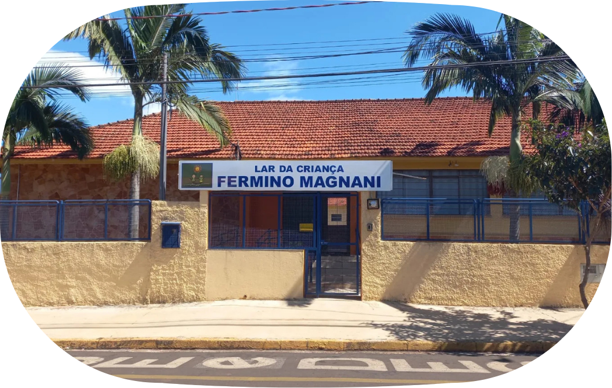
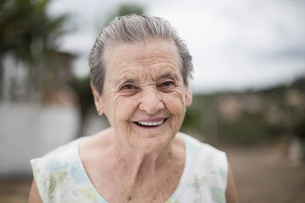

Alimentação
Refeições e cuidados essenciais para o bem-estar das crianças.
Há mais de 60 anos, o Lar da Criança oferece cuidado, acolhimento e oportunidades para que cada criança possa construir um futuro melhor.

O Lar da Criança Fermino Magnani é uma instituição que há décadas acolhe crianças e oferece cuidado, alimentação, atividades e oportunidades para o seu desenvolvimento.
Saiba mais →Conheça as principais ações que fazem parte da nossa rotina e do nosso propósito.
Saiba mais →Refeições e cuidados essenciais para o bem-estar das crianças.
Um ambiente de cuidado, atenção e convivência.
Lazer, criatividade, aprendizado e diversão.
Capacitação e oportunidades para novos caminhos.
Ao longo de mais de seis décadas, o Lar da Criança Fermino Magnani cresceu com o apoio da comunidade, ampliou sua atuação e fortaleceu sua missão de cuidar de crianças e transformar vidas.
Saiba mais →Uma história feita de cuidado, dedicação e muitas mãos unidas por um mesmo propósito.

Mais de seis décadas depois, o propósito continua o mesmo: acolher, educar e criar novas possibilidades.
Em 03 de janeiro de 1960, nasce o Lar da Criança Fermino Magnani, em Santa Cruz do Rio Pardo.
A construção foi possível graças à doação do terreno, campanhas comunitárias e ao esforço coletivo de pessoas que acreditaram no projeto.
Em 19 de maio de 1963, a instituição foi oficialmente inaugurada, tornando-se um importante marco para a assistência à infância no município.
A administração foi confiada à Madre Vitória Lázari e às Irmãs Dominicanas da Beata Imelda, fortalecendo a organização dos serviços prestados.
O Lar ampliou sua atuação, seus serviços e sua capacidade de atendimento, sempre mantendo o cuidado com o desenvolvimento integral das crianças.
Atualmente, o Lar atende 180 crianças em período integral e segue investindo em educação, cuidado, alimentação e desenvolvimento.
Mais de seis décadas transformando cuidado em oportunidades, histórias e novos futuros.
Anos de História
Crianças Atendidas
Ações Realizadas
Famílias Alcançadas
Por trás de cada ação, existem pessoas, histórias e momentos que fazem tudo valer a pena.

O Lar representa muito mais do que cuidado. É um espaço onde crianças encontram acolhimento, oportunidades e pessoas dispostas a fazer a diferença.

Fazer parte dessa história é perceber que cada gesto de cuidado pode abrir novas possibilidades para o presente e para o futuro.

Quando a comunidade acredita e participa, o trabalho ganha força e consegue alcançar ainda mais crianças e famílias.

Uma celebração de cultura e comunidade.

Aprender também é diversão.

A comunidade fazendo parte da nossa história.

Cuidado que também é aprendizado.
Existem muitas formas de apoiar o Lar e contribuir para que esse trabalho continue.
Sua contribuição ajuda a manter e ampliar nosso trabalho.
Doar agora →Empresas e organizações podem fortalecer nossas ações.
Saiba como →Ajude o Lar a chegar a mais pessoas.
Compartilhar →Faça parte de campanhas, eventos e ações.
Conheça as ações →Veja nossas ações, momentos especiais e tudo o que acontece por aqui.
@lar.fermino2018.magnani Acompanhe no Instagram →
Rua Albino Trevisan, nº 115
Vila Oitenta
Santa Cruz do Rio Pardo — SP